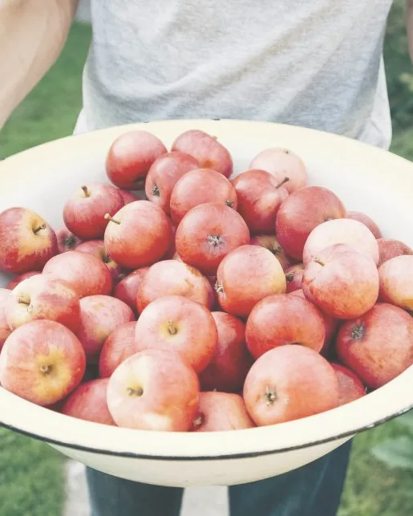
10October秋
今月の実り ・ りんご（紅玉）
紅玉が届くと、
店じゅう甘酸っぱい。
春に花を見た春日さんの畑から、真っ赤な紅玉が届きます。煮くずれしにくく、酸味がしっかり残るので、パイにはこれがいちばん。焼き上がりは11時と14時です。
今月のお菓子紅玉の田舎風アップルパイ1ピース ¥520 ／ ホール ¥3,200Orchard Almanac ・ 果樹園の暦
〇〇県の山あい、果樹園のなかの小さな小屋で、旬の果物のタルトとジャムをつくっています。苺、さくらんぼ、ベリー、りんご。今月、畑で実っているものだけを。

10October秋
今月の実り ・ りんご（紅玉）
春に花を見た春日さんの畑から、真っ赤な紅玉が届きます。煮くずれしにくく、酸味がしっかり残るので、パイにはこれがいちばん。焼き上がりは11時と14時です。
今月のお菓子紅玉の田舎風アップルパイ1ピース ¥520 ／ ホール ¥3,200果物が畑から届く月です。数字を押すと、その月の暦がひらきます。
レモン・柑橘（12月・1月・2月・3月）
苺（2月・3月・4月・5月）
果樹の花（4月・5月）
さくらんぼ（6月）
すもも（7月・8月）
ラズベリー（7月・8月・9月）
ブルーベリー（7月・8月）
ブラックベリー（9月）
洋梨（9月・10月・11月）
りんご（10月・11月・12月）
Recipe Cards
お菓子ひとつにつき、一枚のカード。材料と、畑の名前を書いて、ショーケースの横に貼っています。お店に並ぶのは、その月のカードのお菓子です。
Spring
春のレシピカード
3月 — 5月
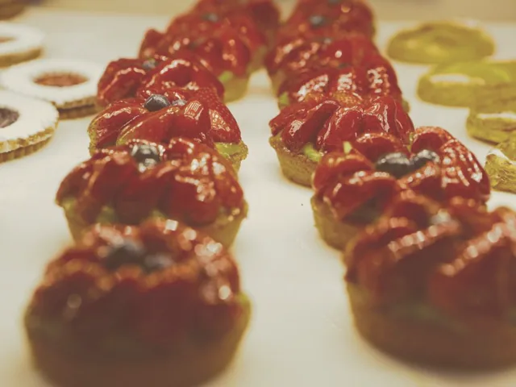
No.03 March ・ 3月
1個 ¥480
材料
冷やしすぎないで。苺の香りがいちばん立つのは、少し置いてから。
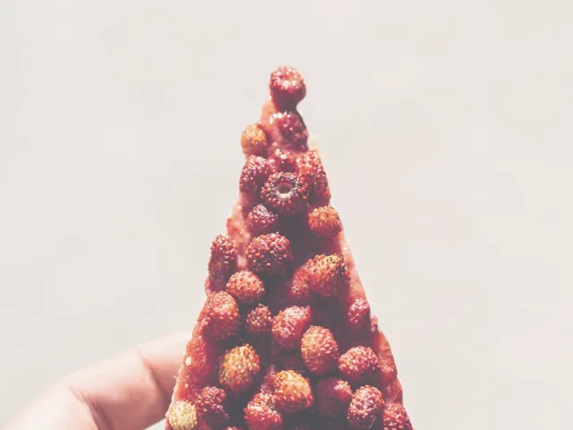
No.04 April ・ 4月
1ピース ¥560
材料
野いちごのような小さな苺。ぷちぷちした食感をどうぞ。
No.05 May ・ 5月
タルト ¥520 ／ コンポート瓶 ¥880
材料
コンポートのシロップは、炭酸で割ってもおいしい。
Summer
夏のレシピカード
6月 — 8月
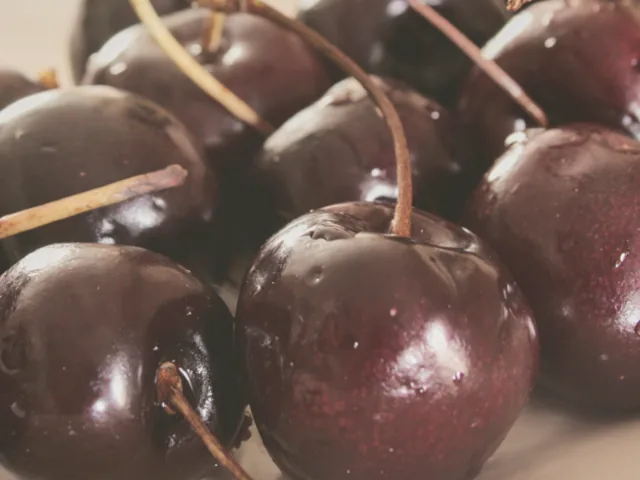
No.06 June ・ 6月
瓶 ¥1,200
材料
種は抜いていません。小さなお子さまには気をつけて。
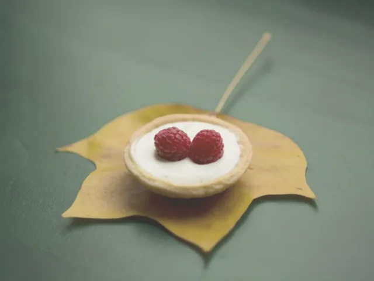
No.07 July ・ 7月
1個 ¥420
材料
ひと口サイズ。暑い日は保冷剤をおつけします。
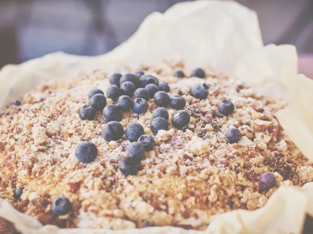
No.08 August ・ 8月
1ピース ¥480 ／ ホール ¥2,900
材料
ざくざくのクランブルは、温め直すと香ばしさが戻ります。
Autumn
秋のレシピカード
9月 — 11月
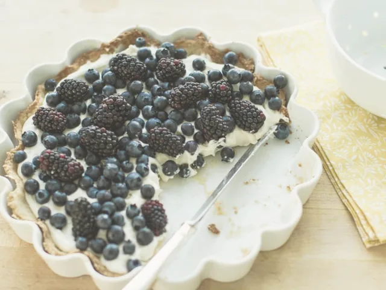
No.09 September ・ 9月
1ピース ¥560
材料
甘さひかえめ。ベリーの酸味をそのまま。
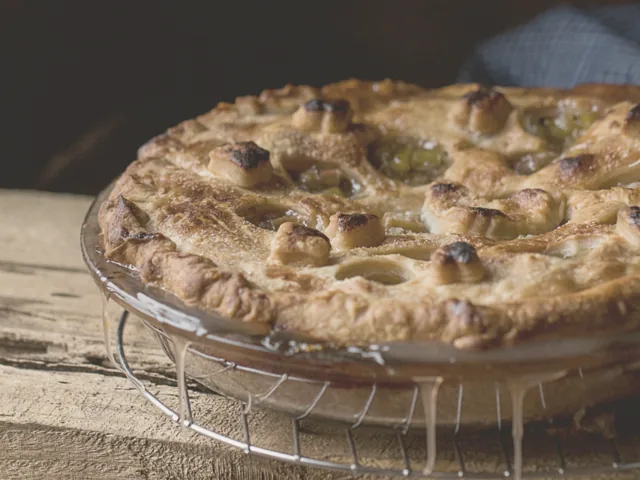
No.10 October ・ 10月
1ピース ¥520 ／ ホール ¥3,200
材料
ホールは前日までのご予約で確実です。
No.11 November ・ 11月
1ピース ¥500
材料
トースターで2分。皮がぱりっと戻ります。
Winter
冬のレシピカード
12月 — 2月
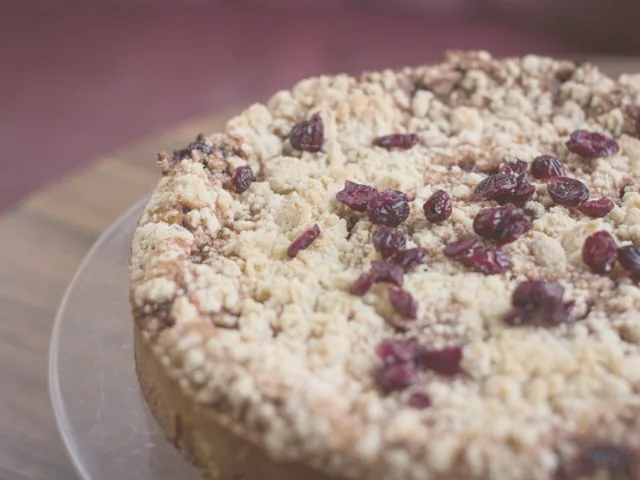
No.12 December ・ 12月
18cm ¥2,800 ／ ジャム3本セット ¥2,800
材料
日持ちは4日。少しずつ切って、年越しまで。
No.01 January ・ 1月
1ピース ¥540 ／ ホール18cm ¥3,800
材料
メレンゲは焼き色しっかりめ。中はきゅっと酸っぱいです。
Our Growers
木の実舎の果物は、車で1時間以内の畑と、ひとつの島から。毎月、畑に通って、話をして、その年いちばんの実を分けてもらっています。
〇〇いちご園
苺
祖父の代からの苺農家。農薬にたよらない育て方を少しずつ広げてきました。木の実舎の苺はすべて、佐伯さんのハウスと露地のもの。
苺はうそをつかないから、手をかけたぶんだけ甘くなります。
丘の上果樹園
さくらんぼ・すもも・洋梨
丘の斜面に、さくらんぼ・すもも・洋梨を30本ずつ。ご夫婦ふたりで、脚立にのぼって一粒ずつ収穫しています。
形がふぞろいでも、味は自慢。お菓子になってもらえるとうれしい。
〇〇高原・春日りんご園
りんご
標高600mの高原で、紅玉とふじを育てて40年。春の花の時期には、木の実舎のスタッフも受粉の手伝いに通います。
りんごの一年は、冬の剪定から始まるんですよ。
〇〇島・大西柑橘園
レモン・柑橘
瀬戸内に浮かぶ〇〇島の段々畑。防腐剤やワックスを使わず、皮まで安心して使えるレモンを届けてくれます。
潮風があたる畑のレモンは、香りが強いんです。
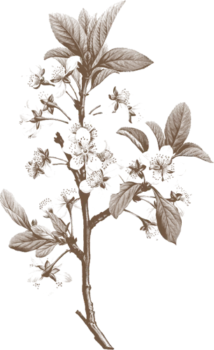
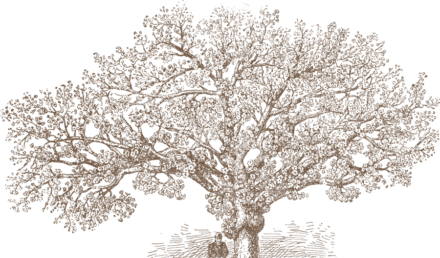
About
木の実舎は、りんご農家だった祖父の作業小屋を手直しして、2019年に始めた小さなお菓子屋です。窓の外はりんごと洋梨の木。季節が動くたびに、ショーケースの中身も入れ替わります。
店主の木下は、もともと都内の洋菓子店でパティシエをしていました。「いちばんおいしい時期の果物を、いちばん近くで焼きたい」。それが、この場所にお店をひらいた理由です。
輸入の果物や、季節はずれの果物は使いません。そのかわり、旬の実は冷凍やジャムにして、次の季節へつなぎます。
すべてのレシピカードに、畑の名前を書いています。お子さんと一緒に「どこから来たの？」を話すきっかけになればうれしいです。
平飼い卵、発酵バター、きび砂糖、県内産の小麦粉。香料や保存料は加えていません。
Orchard Letter
Shop & Access
ホールのタルトとパイは、前日の15時までにお電話でご予約ください。お子さま連れの方も、どうぞ気軽に。小屋の前にベンチとブランコがあります。
Reservation
お誕生日や集まりのタルト・パイは、前日の15時までにご予約ください。夏の摘み取り会のお申し込みもこちらから。
ご予約・お問い合わせお電話 000-000-0000金・土・日 10:00–16:00